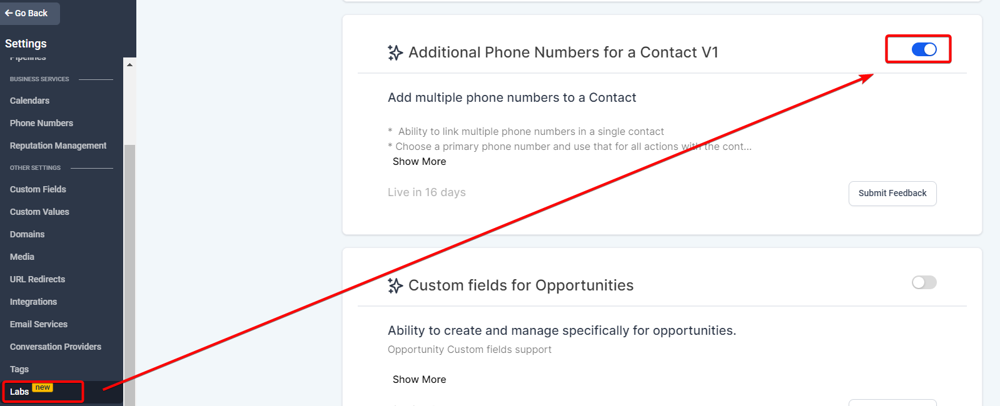
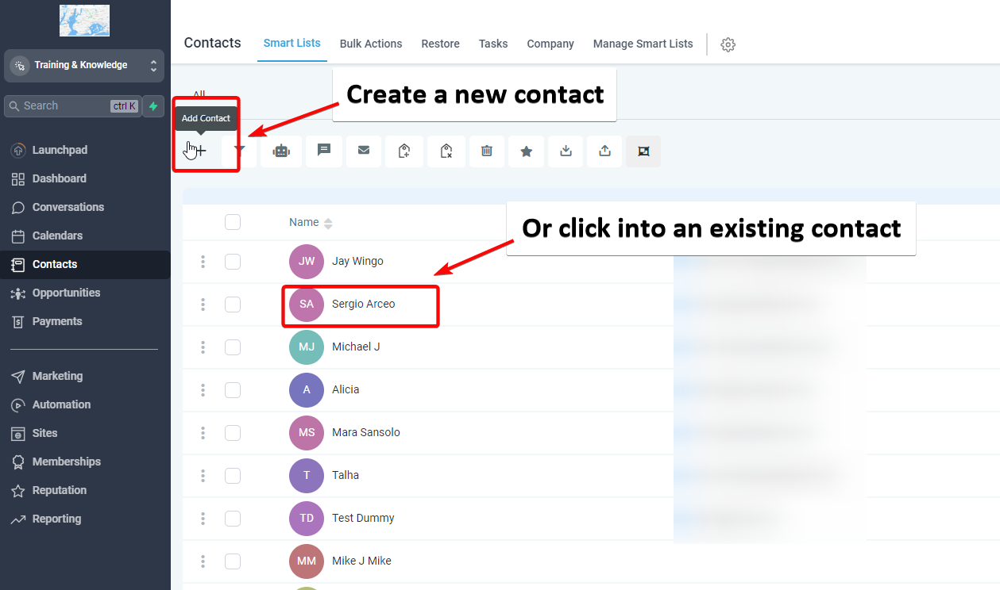
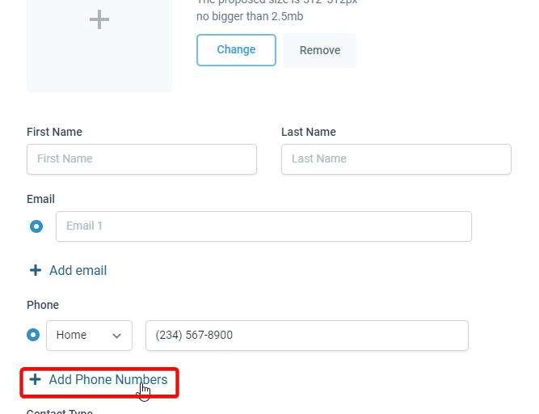
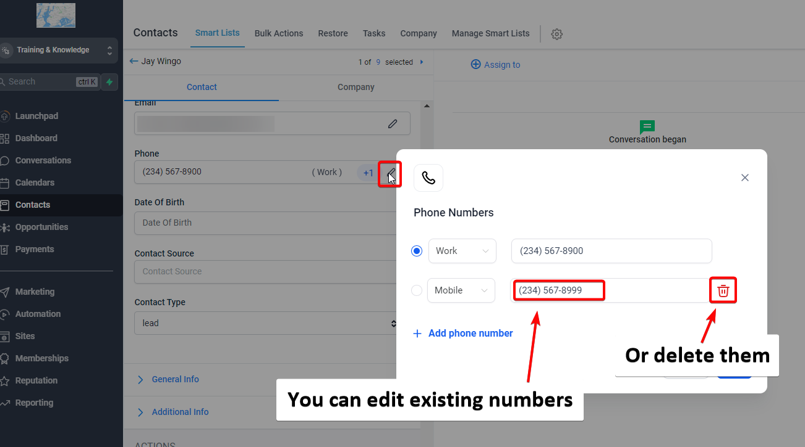
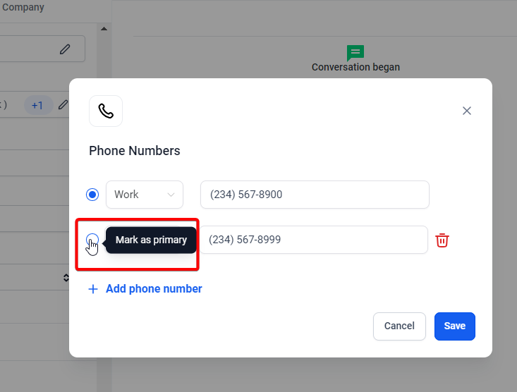
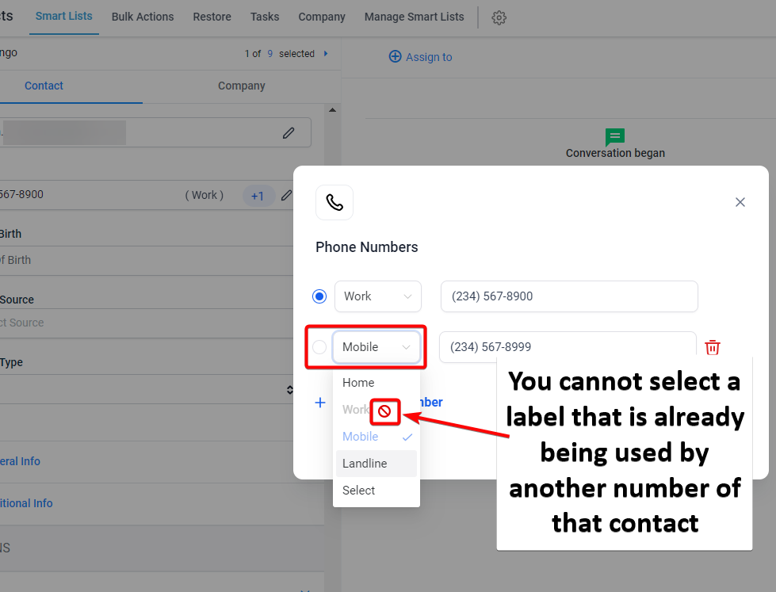
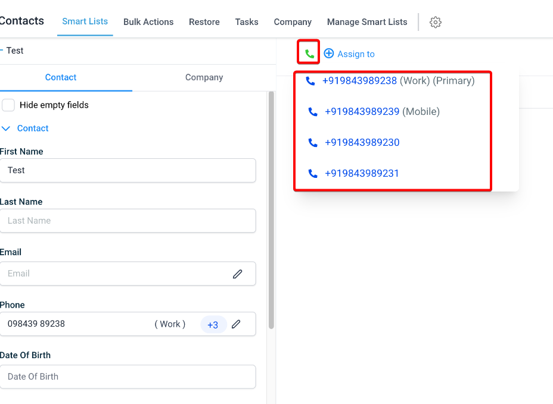

Multiple Phone Numbers for a Contact allows users to efficiently manage multiple phone numbers for a single contact efficiently, thereby improving communication and organization. From adding and editing multiple numbers to designating a primary contact, this feature is about optimizing user experience and streamlining workflows.
This feature can be found under the Labs section in the Sub-Account Settings. By default, it is turned off and users need to enable it manually.
Covered in this Article:
Q: What happens if I don't designate a primary phone number?
Q: Can I call on any of the additional phone numbers?
Q: What new features are expected to be added in the future?
Q: Will the additional phone numbers sync with my other devices where I have mobile apps installed?
Q: Can I change the labels once they're set?
What is this feature?
The Multiple Phone Numbers for a Contact feature is designed to enhance the user experience in managing contact information within a CRM system. Here are some detailed aspects of this feature:
Adding Multiple Phone Numbers: This feature enables users to add up to eleven phone numbers for a single contact. This capability provides greater flexibility for users who frequently need to manage clients or leads with multiple contact numbers. This could include home, work, mobile numbers, or different numbers that a client prefers to use at different times.
Convenient Management and Editing: All the phone numbers added to the contact can be easily managed and edited within the contact details page. This feature makes it easy to update contact information as it changes, ensuring that the CRM always contains the most accurate and up-to-date information.
Designation of a Primary Phone Number: Users can designate a primary phone number for all actions and interactions with the contact. This primary phone number will be the default for all communication activities unless otherwise specified, ensuring consistency in communication.
Phone Number Labels: To better categorize and differentiate the contact's phone numbers, users can add labels to each phone number. Current labels include Home, Landline, Mobile, and Work. Each label can be selected only once for a contact.
Calling on Additional Phone Numbers: The feature also allows users to call on any of the additional phone numbers, giving them more flexibility in communication.
Upcoming Enhancements: Future enhancements to this feature include conversation support for additional phone numbers, bulk import functionality for adding multiple phone numbers, and availability of additional phone numbers during Contact Export.
Usage Cases:
Streamlined Customer Service: A business could use this feature to reach its customers more effectively. The service representative can try another if a customer cannot be reached on one number. This flexibility can lead to faster resolution times, higher customer satisfaction, and improved customer retention rates.
Effective Sales Process: In sales, time is of the essence. Sales representatives can quickly try another if a lead is not responding to one number. This feature could help reduce the lead response time and increase the likelihood of converting leads into customers.
Enhanced Marketing Campaigns: Businesses running multichannel marketing campaigns could use different phone numbers to reach customers based on their preferences or past responses. This can help improve campaign success rates and deliver personalized customer experiences.
Reliable Vendor Management: Companies often deal with vendors who have multiple contact points. Storing and categorizing these within the vendor contact can improve communication efficiency and ensure seamless operations.
Effective Employee Communication: In larger corporations, employees might have different contact numbers for different departments or roles. Storing and managing these multiple numbers can streamline internal communication and enhance productivity.
Emergency Response Situations: Multiple contact numbers can be a lifesaver in healthcare or disaster management industries. Emergency response teams can reach out to patients or affected people more effectively if one contact number is not available or reachable.
Managing International Business Contacts: For businesses operating in different countries, keeping track of international dialing codes and multiple phone numbers for overseas contacts can be challenging. This feature can help manage such information conveniently, leading to smoother international communication.
How to use this feature?
Add multiple phone numbers to contact:
- Go to your contacts page.
- Create a new contact or choose an existing one. You can add multiple phone numbers for both new contacts and by editing existing ones.

- You will see a 'Phone Numbers' section within the contact's details.
- Click on 'Add Phone Numbers.'

Please Note:
You can do this up to 11 times per contact. Including the original primary number.
Edit or manage phone numbers:
To edit a phone number, click the 'Edit' button next to the phone number.
You can then change the phone number, delete it, or change the associated label.

Designate a primary phone number:
You can set one of the phone numbers as the 'Primary Phone Number.'
The primary phone number will be the default contact point for all interactions with that contact.
To do this, click the 'Mark as Primary' checkbox next to the phone number you want to designate.

Add labels to phone numbers:
To help categorize the phone numbers, you can add labels such as 'Home,' 'Landline,' 'Mobile,' and 'Work.'
Choose the appropriate label from the dropdown menu when adding or editing a phone number.

Make a call on an additional phone number:
You can call any of the added phone numbers from the contact's details.
Click on the 'Call' button next to the phone number you wish to call.

FAQs
Q: What happens if I don't designate a primary phone number?
A: In such cases, the first phone number you entered will be treated as the primary contact number.
Q: Can I call on any of the additional phone numbers?
A: Yes, you can call on any additional phone number.
Q: What new features are expected to be added in the future?
A: We're working on adding conversation support for additional phone numbers, a bulk import functionality for adding multiple phone numbers, and making the additional phone numbers available during contact export.
Q: Will the additional phone numbers sync with my other devices where I have mobile apps installed?
A: Yes, as long as your devices are connected to the internet, the additional phone numbers will sync across all your devices.
Q: Can I change the labels once they're set?
A: Yes, you can edit the labels anytime you want from the contact details page.